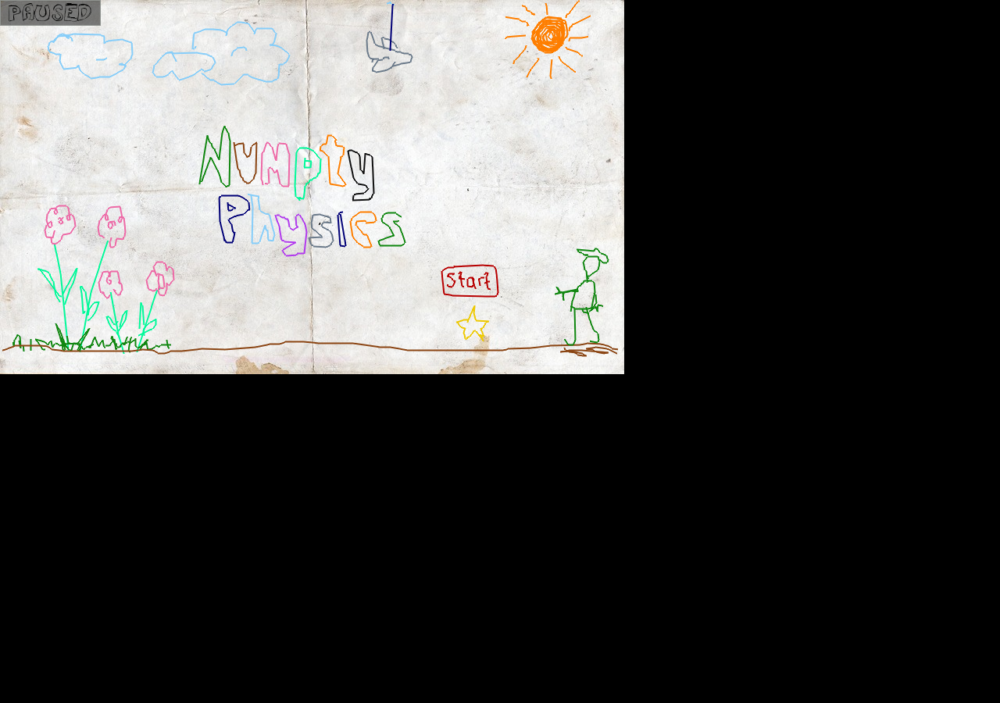

QA Status
PASS
No-network native launch reached a nonblank post-input screen. This is a first-play smoke, not a full completion proof.
Latest report: qa/reports/public-package-expansion-20260620/numptyphysics-lan-20260620T055022Z
Crayon-based physics puzzle game
Native Puzzle - Drawing Physics - Puzzle, Physics, Family

PASS
No-network native launch reached a nonblank post-input screen. This is a first-play smoke, not a full completion proof.
Latest report: qa/reports/public-package-expansion-20260620/numptyphysics-lan-20260620T055022Z
This is a native Debian package game, not a browser game. The game and package closure are cached on the LAN Arcade native-downloads shelf so Linux/Raspberry Pi clients can install without internet.
Open offline package shelfSeed package: numptyphysics
Typical offline install after downloading the shelf files:
sudo apt install ./*.deb
Installed package docs were inspected on the VM. PDF manuals are counted with Poppler when present.
/usr/share/doc/debconf/changelog.gz/usr/share/doc/debconf/NEWS.Debian.gz/usr/share/doc/fontconfig-config/changelog.gz/usr/share/doc/fontconfig-config/changelog.Debian.gz/usr/share/doc/fontconfig-config/NEWS.Debian.gz/usr/share/doc/fonts-croscore/FAQ-KR.md.gz/usr/share/doc/fonts-croscore/changelog.Debian.gz/usr/share/doc/fonts-croscore/NEWS.md.gz/usr/share/doc/fonts-croscore/README.md/usr/share/doc/fonts-croscore/FAQ.md.gz/usr/share/doc/fonts-dejavu-core/changelog.gz/usr/share/doc/fonts-dejavu-core/status.txt.gz/usr/share/doc/fonts-dejavu-core/changelog.Debian.gz/usr/share/doc/fonts-dejavu-core/langcover.txt.gz/usr/share/doc/fonts-dejavu-core/unicover.txt.gz/usr/share/doc/fonts-dejavu-core/README.md